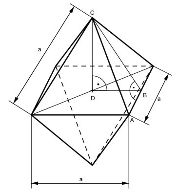

Aufgabe 214 Wie groß sind die Oberfläche O und das Volumen V eines Oktaeders mit Seitenlängen a von je 4,8 cm?  AC = a AB = a/2 BC = hs DC = h DB = a/2 Satz von Pythagoras im Dreieck ABC: AC² = BC² + (a/2)² |-(a/2)² a² - (a/2)² = hs² a² a² - ---- = hs² 4 3 * a2 hs² = --------- |√ 4 a 4,8 cm hs = --- * √3 = --------- * √3 = 4,16 cm 2 2 Satz von Pythagoras im Dreieck DBC: BC² = DB² + CD² hs² = (a/2)² + h² |-(a/2)² h² = 4,16² cm² - 2,4² cm² = 11,5456 cm² |√ h = 3,4 cm 4,8 cm * 4,16 cm O = 8 * ------------------- = 79,9 cm² 2 4,8² cm² * 3,4 cm V = 2 * ------------------- = 52,2 cm³ 3